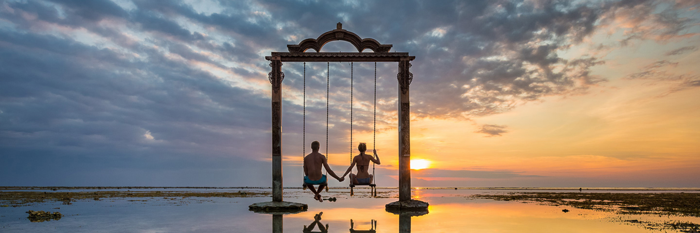
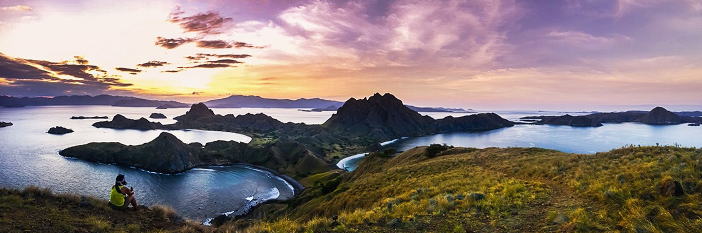
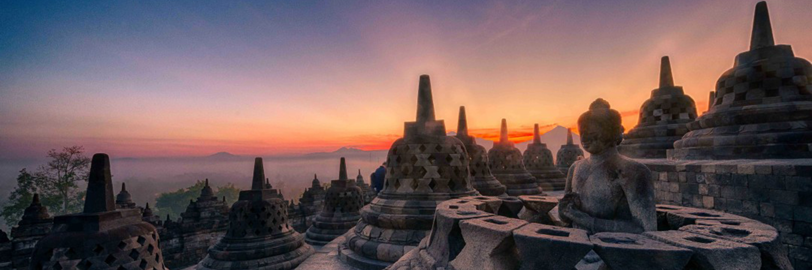

Gili Trawangan memendam memory
Siapa yang tidak terpukau dengan keindahan Gili Trawangan? Lanskap pulau yang masih alami... read more

Kunjungan ke surga Sulawesi
Sulawesi selatan dengan Makassar sebagai ibukotanya, tentu tidak asing lagi di telinga kita. Kota yang... read more

Melancong ke Ubud Bali
Bagi yang belum pernah liburan ke Ubud, akan bertanya-tanya! Ada apa di Ubud, sehingga... read more

Memotret sejarah Borobudur
Candi borobudur adalah salah satu peninggalan sejarah agama buddha. Candi borobudur... read more